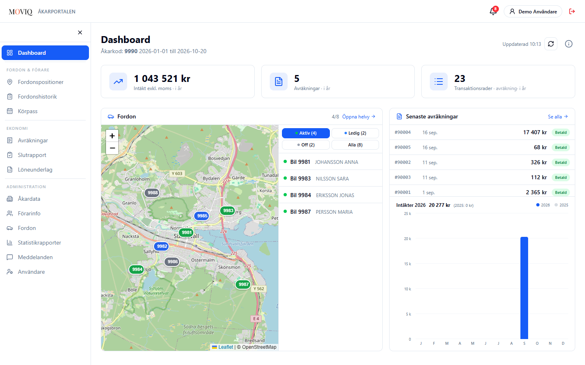
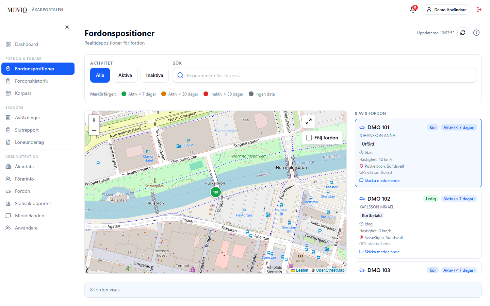
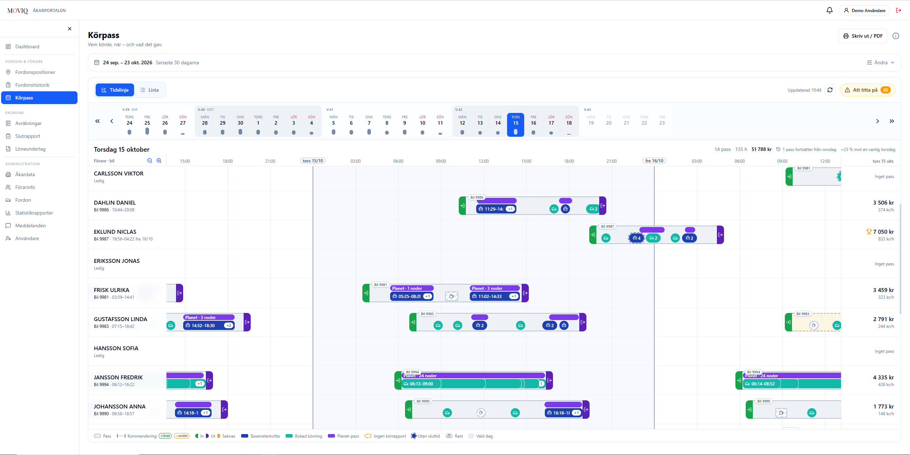
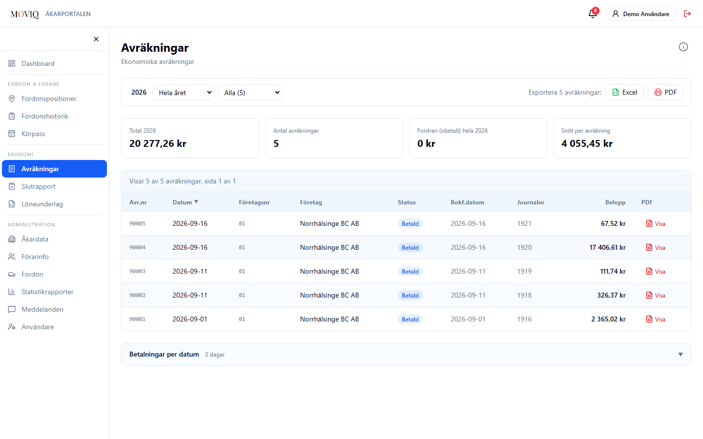
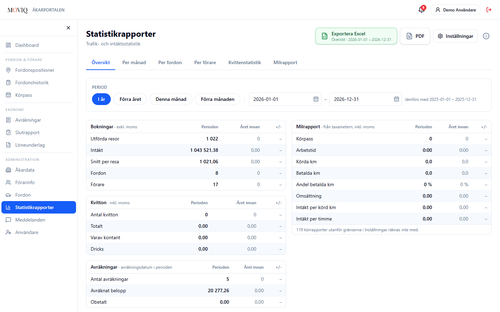

Taxi Carrier Portal
Rebuilding, securing and redesigning the portal where taxi carriers manage their entire operation
The challenge
The existing carrier portal was built on legacy Delphi code. The goal was to modernise it into a usable, secure web portal, keeping the domain logic intact while delivering a significantly better user experience.
My role
Developer and portal owner at Holmedal Data. I set the requirements, owned the domain knowledge, steered design decisions, and led security reviews, end to end.
Key outcome
13 fully mobile-adapted pages shipped to production. A new 2FA login replacing unsalted MD5. Driving shifts (Körpass) with taximeter-verified shift economics. 99.5% of shifts with correct data.
Stack
SvelteKit 5 · Svelte 5 · TypeScript · Tailwind CSS · .NET 10 · ASP.NET Core · Dapper · PostgreSQL
The process
Domain first, then design
Understanding the domain
Before designing or building anything, I mapped out how the taxi carrier business actually works: how settlements differ from revenue, how a shift's economics come from the taximeter's binary reports rather than the booking system, and what the legacy Delphi portal was doing right. The old source code became the truth source for business logic throughout the project.
Dashboard and vehicle tracking
The dashboard gives carriers an immediate overview: revenue for the year, recent settlements, and a live map of all vehicles with their current status. The design went through several iterations to balance information density with readability, particularly on mobile where cards stack into two columns and the map scrolls below.

Live vehicle map
The vehicle position page gives carriers a real-time view of where all their vehicles are. Clicking a vehicle shows its current status and details. It replaced a process where carriers had to call drivers or check separately to know what was happening in the fleet.

Driving shifts (Körpass), the heart of the portal
Driving shifts (Körpass) is the feature carriers use most. It shows every driving shift in a Gantt-like timeline: who drove, in which vehicle, exactly when and what it earned. The economic data is not entered manually; it is decoded directly from the taximeter's binary reports, making it tamper-resistant and verifiable.
One design challenge that shaped this feature early on was that taxi drivers do not work in calendar days. A shift often starts late at night and continues into the early hours of the next morning. My initial design used a day-by-day view, which broke as soon as a shift crossed midnight. The timeline approach solved this properly by anchoring each shift to when it actually started, regardless of what day it ended on.
The calendar navigation lets carriers step through weeks, spot anomalies and compare shifts against typical performance. This was the feature I spent the most time on, and the one carriers responded to most strongly.

Settlements and statistics
The settlements page gives carriers a clear view of what they are owed or charged each period, with downloadable PDFs and payment status in one place. Previously this information was scattered and hard to verify. The statistics page lets carriers follow trends over time by vehicle, driver and month, which makes it easier to spot what is actually driving revenue and what is not.


"Good software starts with understanding the business, not the tech stack."
Outcome
What I delivered
A fully rebuilt, production-deployed carrier portal with 13 mobile-adapted pages, a secure 2FA login, Driving shifts (Körpass) with verified shift economics, and clear settlement and statistics views. My first real experience of project ownership, combining domain research, UX decisions, full-stack development and security work.
A complete portal rebuilt from scratch and shipped to real users
Legacy security replaced with modern two-factor authentication
Tailored for real user needs, not just technical requirements
Every shift's earnings decoded directly from the taximeter, not entered manually
Reflection
What I learned
This project pushed me across the full stack in ways a course project never could. Owning the domain knowledge, making design calls, and being responsible for security and performance simultaneously taught me that good software requires understanding the whole system, not just the layer you are currently working in. The combination of UX thinking and development meant fewer surprises and better decisions at every stage.